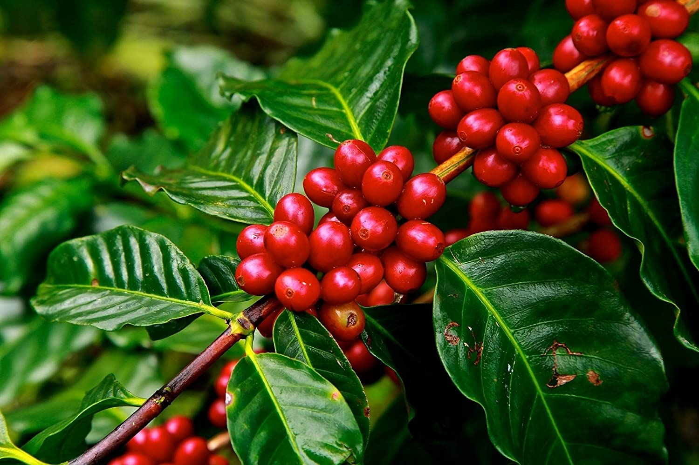
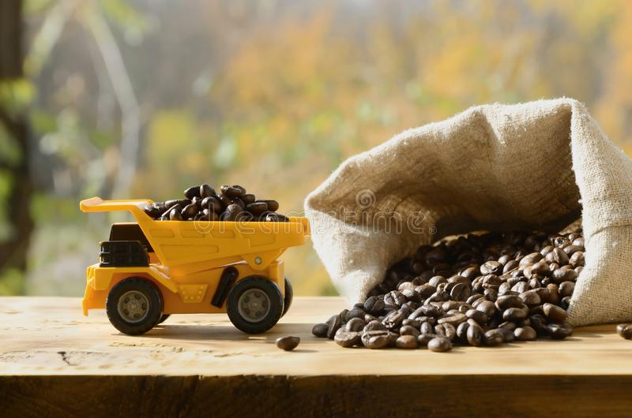
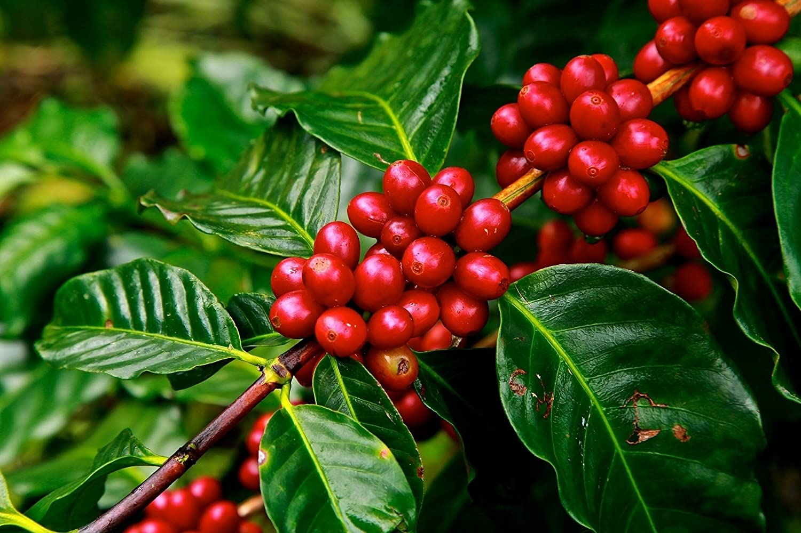
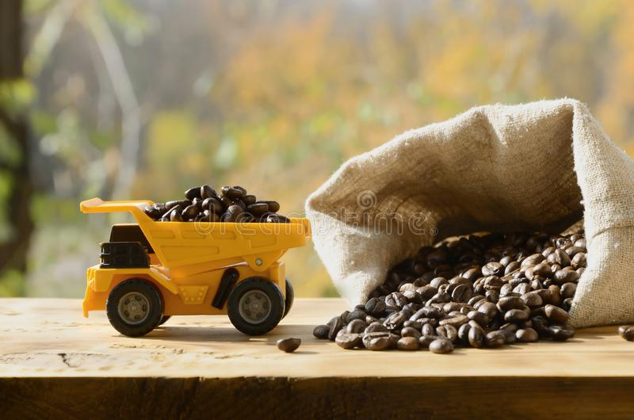
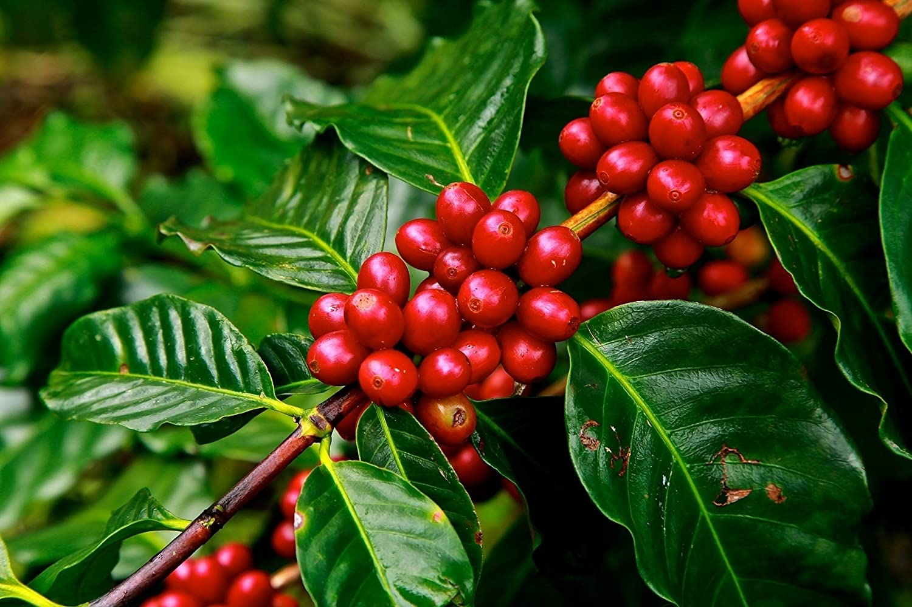
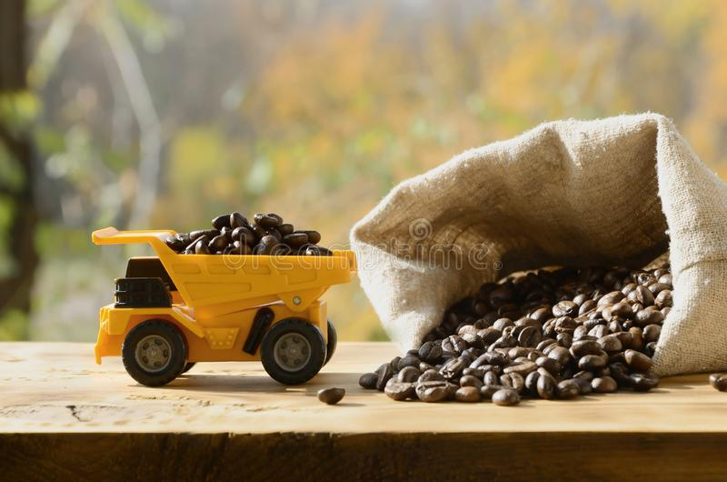

En sida om kaffe
Startsida
Formulär
Om oss
Galleri
Användbara länkar
Idélåda
Såhär kan det se ut där kaffeplantan växer
En kaffe Americano består av espresso och vatten

En kaffeplanta

Hur transporteras egentligen kaffe?
 Såhär kan det se ut där kaffeplantan växer
En kaffe Americano består av espresso och vatten

En kaffeplanta

Hur transporteras egentligen kaffe?
Såhär kan det se ut där kaffeplantan växer
En kaffe Americano består av espresso och vatten

En kaffeplanta

Hur transporteras egentligen kaffe?